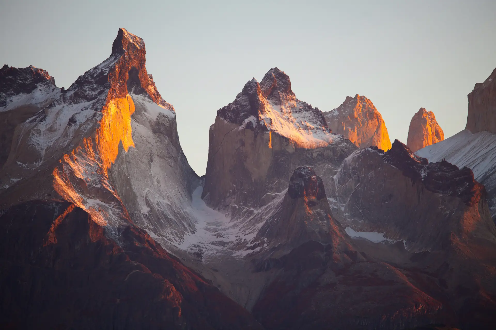

Walk at the edges of the day.
Slow expeditions for eight people and two guides, timed to first light and last. The middle of the day we mostly leave alone.
The light decides the timetable.
Most of our walking happens between an hour before sunrise and two hours after it, and again from late afternoon until the colour goes. In June in Lyngen that second window never quite closes. In Patagonia in March it lasts about forty minutes, and we plan the whole day around it.
Groups are capped at eight. We ran 29 departures in 2025 and will run 31 in 2026, which is as many as our guides can lead without one of them walking a route they don't know in their sleep.
Where the light does the most.
Fourteen days on a route the guidebooks give ten.
We are not slow because we are unfit. We are slow because a pass crossed at 05:40 is a different place from the same pass at noon, and you cannot be in two of them in one day without rushing the one that matters.
So a Longlight day has a shape: up in the dark, walk into the light, a long stop somewhere with a view and a stove, then walk again when the shadows come back. Most days that is five to seven hours on your feet, and almost never more than nine hundred metres of ascent.
Two guides on every departure. One at the front choosing the line, one at the back who is in no hurry at all.
- Walkers
- Eightnever nine, whatever the waiting list says
- Guides
- Twoon every departure, from day one to the last bus
- Walking day
- 5–7 hsplit around the middle of the day
- Departures, 2026
- 31across six routes, April to October, plus March in Chile